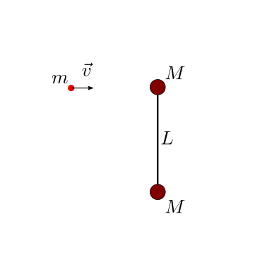

10.5. Collisioni#
Una descrizione dettagliata delle collisioni tra sistemi qualsiasi va ben al di là dello scopo di un primo approccio alla meccanica.
Qui, ci si limiterà allo studio di collisioni che:
possono essere caratterizzate unicamente da un coefficiente di ritorno, \(\varepsilon\) todo
avvengono in intervalli di tempo ridotti, al limite nulli
Questi urti comportano delle variazioni finite delle quantità dinamiche in intervalli di tempo finiti, vengono definiti urti impulsivi (todo verificare) e rappresentano un esempio di moto «non regolare», per il quale le equazioni cardinali della dinamica devono essere scritte in forma incrementale.
todo approfondimento su forze impulsive e delta di Dirac?
Tra due istanti temporali immediatamente precedente e immediatamente successivo all’urto tra due sistemi possono essere trascurate tutte le azioni agenti sul sistema complessivo tranne quelle impulsive dovute all”urto, e ad eventuali reazioni vincolari (vedi esercizi),
con \(\vec{I}^{ext}\) l’impulso delle forze esterne durante l’urto, \(\vec{J}^{ext}\) l’impulso dei momenti esterni durante l’urto, \(L^{ext}\), \(L^{int}\) il lavoro delle forze esterne e interne durante l’urto.
E” bene osservare che in assenza di forze e momenti impulsivi esterni - anche dovuti a eventuali vincoli - ai due sistemi che collidono, la quantità di moto e il momento della quantità di moto del sistema complessivo si conservano in un urto. Al contrario, in generale, l”energia cinetica non si conserva poiché dipende anche dal lavoro delle azioni interne che includono quelle impulsive scambiate durante l’urto.
Il coefficiente di restituzione \(\varepsilon \in [0, 1]\) caratterizza il tipo di urto e ha una facile interpretazione se l’urto viene studiato usando un sistema di riferimento con orgine il centro di massa del sistema, \(Q\). Le quantità riferite a questo sistema vengono indicate qui con l’apice.
Poiché si è scelto come riferimento il centro di massa, in assenza di forze implusive esterne,
todo distinguere tra componente normale e tangenziale
Il coefficiente di restituzione viene definito come l’opposto del rapporto tra il valore assoluto (todo dovrebbe essere la componente normale, assumento che la componente tangenziale si conservi - oppure trovare anche un modello per la componente tangenziale, dovuta ad attrito) della quantità di moto di uno dei due corpi dopo e prima dell’urto,
In termini di energia cinetica, nel sistema di riferimento del centro di massa
10.5.1. Problemi#
Date le masse di due blocchi che scivolano su un piano orizzontale liscio, e le velocità iniziali dei due blocchi, e il coefficiente di restituzione dell’urto, viene chiesto di determinare le velocità dei due blocchi dopo l’urto.

Soluzione.
todo
Date le masse di due blocchi che scivolano su un piano orizzontale scabro, le velocità e la distanza iniziale tra i due blocchi, il coefficiente di restituzione dell’urto, il coefficiente di attrito dinamico \(\mu^d\) tra i due blocchi e il piano orizzontale, viene chiesto di determinare:
le condizioni affinché avvenga l’urto
in caso di urto:
le velocità immediatamente dopo l’urto
la posizione finale delle due masse

Soluzione.
todo
Dato il coefficiente di restituzione degli urti tra la palla di massa \(m_1\) nota e ilpiano orizzontale, viene chiesto di determinare la distanza verticale percorsa dalla palla durante i rimbalzi.
Oss. Il numero di rimbalzi è infinito, ma il risultato si ottiene da una serie infinita convergente.

Soluzione.
todo
Data la configurazione iniziale del sistema massa-molla, con lunghezza a riposo nulla \(\ell_0\) e allungamento iniziale \(x_0\), viene chiesto di descrivere l’evoluzione del sistema in funzione del coefficiente di restituzione \(\varepsilon\) degli urti tra la massa e la parete rigida verticale. In particolare, si chiede di distinguere il caso di urto elastico dai casi di urto parzialmente elastico.

Soluzione.
todo
Nel caso di urti perfettamente elastici tra i due blocchi e con la parete, viene chiesto di determinare il numero di urti tra i due blocchi.

Soluzione.
todo
Un proiettile colpisce un pendolo. In funzione del coefficiente di restituzione \(\varepsilon\), viene chiesto di determinare:
le condizioni immediatamente successive all’urto
l’angolo massimo raggiunto dal pendolo
Si calcolino poi le reazioni vincolari a terra, prima, durante e dopo l’urto.

Soluzione.
todo
Un proiettile colpisce un pendolo. In funzione del coefficiente di restituzione \(\varepsilon\), viene chiesto di determinare:
le condizioni immediatamente successive all’urto
l’angolo massimo raggiunto dal pendolo.
Si calcolino poi le reazioni vincolari a terra, prima, durante e dopo l’urto.
Soluzione.
todo
Un proiettile colpisce il bersaglio di un poligono, inizialmente appoggiato alla parete verticale. In funzione del coefficiente di restituzione \(\varepsilon\), viene chiesto di determinare:
le condizioni immediatamente successive all’urto
la velocità minima del proiettile prima dell’urto che garantisce di abbattere il bersaglio.
Si calcolino poi le reazioni vincolari a terra, prima, durante e dopo l’urto.

Soluzione.
todo
Un proiettile colpisce un sistema rigido di due masse concentrate, libero e inizialmente in quiete. Si chiede di determinare il moto dei sistemi dopo l’urto, in funzione del coefficiente di restituzione.

Soluzione.
todo
Un proiettile colpisce un sistema rigido di due masse concentrate, libero e inizialmente in quiete. Si chiede di determinare il moto dei sistemi dopo l’urto, in funzione del coefficiente di restituzione.

Soluzione.
todo